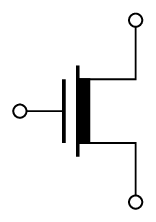

Before we close of MOSFETMetal-Oxide Semiconductor Field-Effect TransistorIn electronics, the metaloxidesemiconductor field-effect transistor (MOSFET, MOS-FET, MOS FET, or MOS transistor) is a type of field-effect transistor (FET), most commonly fabricated by the controlled oxidation of silicon. It has an insulated gate, the voltage of which determines the conductivity of the device. This ability to change conductivity with the amount of applied voltage can be used for amplifying or switching electronic signals. The term metalinsulatorsemiconductor field-effect transistor (MISFET) is almost synonymous with MOSFET. Another near-synonym is insulated-gate field-effect transistor (IGFET).s, let’s briefly consider a number of important though secondary issues.
In numerous applications the source terminal (S) is connected to the substrate (or body) terminal (B), which results in the pn junction between the substrate and the induced channel (review Fig. 5.5) having a constant zero (cutoff) bias. In such a case the substrate does not play any role in circuit operation and its existence can be ignored altogether.
In ICIntegrated CircuitA small electronic device combining numerous interconnected components, like transistors, resistors, and capacitors, onto a single semiconductor chip, usually silicons, however, the substrate is usually common to many MOS transistors. In order to maintain the cutoff condition for all the substrate-to-channel junctions, the substrate is usually connected to the most negative power supply in an NMOS circuit (the most positive in a PMOS circuit). The resulting reverse-bias voltage between source and body ( in an <i>n</i>-channel device) will have an effect on device operation. To appreciate this fact, consider an NMOS transistor and let its substrate be made negative relative to the source. The reverse-bias voltage will widen the depletion region (refer to Fig. 5.2). This in turn reduces the channel depth. To return the channel to its former state, has to be increased. The effect of on the channel can be most conveniently represented as a change in the threshold voltage . Specifically, it has been shown that increasing the reverse substrate bias voltage results in an increase in according to the relationship
| (5.31) |
where is the threshold voltage for ; is a physical parameter with typically 0.6 V; is a fabrication-process parameter given by
| (5.32) |
where is the magnitude of the electron charge , is the doping concentration of the p-type substrate, and is the permittivity of silicon F/cm). The parameter has the dimension of and is typically 0.4 V<sup>1/2</sup>. Finally, note that Eq. (5.30) applies equally well for p-channel devices with replaced by the reverse bias of the substrate, (or, alternatively, replace by ) and note that is negative. Also, in evaluating , must be replaced with , the doping concentration of the <i>n</i> well in which the PMOS is formed. For <i>p</i>-channel devices, is typically 0.75 V, and is typically -0.5 V<sup>1/2</sup>.
Equation (5.30) indicates that an incremental change in gives rise to an incremental change in , which in turn results in an incremental change in even though might have been kept constant. It follows that the body voltage controls ; thus the body acts as another gate for the MOSFETMetal-Oxide Semiconductor Field-Effect TransistorIn electronics, the metaloxidesemiconductor field-effect transistor (MOSFET, MOS-FET, MOS FET, or MOS transistor) is a type of field-effect transistor (FET), most commonly fabricated by the controlled oxidation of silicon. It has an insulated gate, the voltage of which determines the conductivity of the device. This ability to change conductivity with the amount of applied voltage can be used for amplifying or switching electronic signals. The term metalinsulatorsemiconductor field-effect transistor (MISFET) is almost synonymous with MOSFET. Another near-synonym is insulated-gate field-effect transistor (IGFET)., a phenomenon known as the body effect. Here we note that the parameter is known as the body-effect parameter.
Both and are temperature sensitive. The magnitude of decreases by about rise in temperature. This decrease in gives rise to a corresponding increase in drain current as temperature is increased. However, because decreases with temperature and its effect is a dominant one, the overall observed effect of a temperature increase is a decrease in drain current. [149] This very interesting result is put to use in applying the MOSFETMetal-Oxide Semiconductor Field-Effect TransistorIn electronics, the metaloxidesemiconductor field-effect transistor (MOSFET, MOS-FET, MOS FET, or MOS transistor) is a type of field-effect transistor (FET), most commonly fabricated by the controlled oxidation of silicon. It has an insulated gate, the voltage of which determines the conductivity of the device. This ability to change conductivity with the amount of applied voltage can be used for amplifying or switching electronic signals. The term metalinsulatorsemiconductor field-effect transistor (MISFET) is almost synonymous with MOSFET. Another near-synonym is insulated-gate field-effect transistor (IGFET). in power circuits.
As the voltage on the drain is increased, a value is reached at which the pn-junction between the drain region and substrate suffers avalanche breakdown. This breakdown usually occurs at voltages of to and results in a somewhat rapid increase in current.
This is known as a weak avalanche.
Another breakdown effect that occurs at lower voltages [150] This occurs usually around . in modern devices is called punch-through. It occurs in devices with relatively short channels when the drain voltage is increased to the point that the depletion region surrounding the drain region extends through the channel to the source. The drain current then increases rapidly.
Normally, punch-through does not result in permanent damage to the device.
Yet another kind of breakdown occurs when the gate-to-source voltage exceeds about . This is the breakdown of the gate oxide and results in permanent damage to the device.
Although may seem high, it must be remembered that the MOSFETMetal-Oxide Semiconductor Field-Effect TransistorIn electronics, the metaloxidesemiconductor field-effect transistor (MOSFET, MOS-FET, MOS FET, or MOS transistor) is a type of field-effect transistor (FET), most commonly fabricated by the controlled oxidation of silicon. It has an insulated gate, the voltage of which determines the conductivity of the device. This ability to change conductivity with the amount of applied voltage can be used for amplifying or switching electronic signals. The term metalinsulatorsemiconductor field-effect transistor (MISFET) is almost synonymous with MOSFET. Another near-synonym is insulated-gate field-effect transistor (IGFET). has a very high input resistance and a very small input capacitance, and thus small amounts of static charge accumulating on the gate capacitor can cause its breakdown voltage to be exceeded.
To prevent the accumulation of static charge on the gate capacitor of a MOSFETMetal-Oxide Semiconductor Field-Effect TransistorIn electronics, the metaloxidesemiconductor field-effect transistor (MOSFET, MOS-FET, MOS FET, or MOS transistor) is a type of field-effect transistor (FET), most commonly fabricated by the controlled oxidation of silicon. It has an insulated gate, the voltage of which determines the conductivity of the device. This ability to change conductivity with the amount of applied voltage can be used for amplifying or switching electronic signals. The term metalinsulatorsemiconductor field-effect transistor (MISFET) is almost synonymous with MOSFET. Another near-synonym is insulated-gate field-effect transistor (IGFET)., gate-protection devices are usually included at the input terminals of MOS integrated circuits. The protection mechanism invariably makes use of clamping diodes.
At high longitudinal electric fields, the drift velocity of charge carriers in the channel reaches an upper limit. [151] This is approximately for electrons and holes in silicon. This effect, which in modern very-short-channel devices can occur for lower than , is called velocity saturation. It can be shown that when velocity saturation occurs, the current will no longer be related to by the square-law relationship. Rather, becomes linearly dependent on and the transconductance becomes constant and independent of .
We will finish of MOSFETMetal-Oxide Semiconductor Field-Effect TransistorIn electronics, the
metaloxidesemiconductor field-effect transistor (MOSFET, MOS-FET, MOS FET, or MOS transistor)
is a type of field-effect transistor (FET), most commonly fabricated by the controlled oxidation of
silicon. It has an insulated gate, the voltage of which determines the conductivity of the device. This
ability to change conductivity with the amount of applied voltage can be used for amplifying or
switching electronic signals. The term metalinsulatorsemiconductor field-effect transistor (MISFET) is
almost synonymous with MOSFET. Another near-synonym is insulated-gate field-effect transistor
(IGFET). with a brief discussion of another type of MOSFETMetal-Oxide Semiconductor
Field-Effect TransistorIn electronics, the metaloxidesemiconductor field-effect transistor
(MOSFET, MOS-FET, MOS FET, or MOS transistor) is a type of field-effect transistor
(FET), most commonly fabricated by the controlled oxidation of silicon. It has an insulated
gate, the voltage of which determines the conductivity of the device. This ability to change
conductivity with the amount of applied voltage can be used for amplifying or switching
electronic signals. The term metalinsulatorsemiconductor field-effect transistor (MISFET) is
almost synonymous with MOSFET. Another near-synonym is insulated-gate field-effect
transistor (IGFET)., called the depletion-type MOSFETMetal-Oxide Semiconductor Field-Effect
TransistorIn electronics, the metaloxidesemiconductor field-effect transistor (MOSFET, MOS-FET,
MOS FET, or MOS transistor) is a type of field-effect transistor (FET), most commonly
fabricated by the controlled oxidation of silicon. It has an insulated gate, the voltage of which
determines the conductivity of the device. This ability to change conductivity with the
amount of applied voltage can be used for amplifying or switching electronic signals. The term
metalinsulatorsemiconductor field-effect transistor (MISFET) is almost synonymous with MOSFET.
Another near-synonym is insulated-gate field-effect transistor (IGFET).. [152] 
Its structure is similar to that of the enhancement-type MOSFETMetal-Oxide Semiconductor Field-Effect TransistorIn electronics, the metaloxidesemiconductor field-effect transistor (MOSFET, MOS-FET, MOS FET, or MOS transistor) is a type of field-effect transistor (FET), most commonly fabricated by the controlled oxidation of silicon. It has an insulated gate, the voltage of which determines the conductivity of the device. This ability to change conductivity with the amount of applied voltage can be used for amplifying or switching electronic signals. The term metalinsulatorsemiconductor field-effect transistor (MISFET) is almost synonymous with MOSFET. Another near-synonym is insulated-gate field-effect transistor (IGFET). with one significant difference:
Therefore an n-channel depletion-type MOSFETMetal-Oxide Semiconductor Field-Effect TransistorIn electronics, the metaloxidesemiconductor field-effect transistor (MOSFET, MOS-FET, MOS FET, or MOS transistor) is a type of field-effect transistor (FET), most commonly fabricated by the controlled oxidation of silicon. It has an insulated gate, the voltage of which determines the conductivity of the device. This ability to change conductivity with the amount of applied voltage can be used for amplifying or switching electronic signals. The term metalinsulatorsemiconductor field-effect transistor (MISFET) is almost synonymous with MOSFET. Another near-synonym is insulated-gate field-effect transistor (IGFET). has an n-type silicon region connecting the source and the drain regions at the top of the p-type substrate. Therefore if a voltage is applied between drain and source, a current flows for .
In other words, there is no need to induce a channel, unlike the case of the enhancement MOSFETMetal-Oxide Semiconductor Field-Effect TransistorIn electronics, the metaloxidesemiconductor field-effect transistor (MOSFET, MOS-FET, MOS FET, or MOS transistor) is a type of field-effect transistor (FET), most commonly fabricated by the controlled oxidation of silicon. It has an insulated gate, the voltage of which determines the conductivity of the device. This ability to change conductivity with the amount of applied voltage can be used for amplifying or switching electronic signals. The term metalinsulatorsemiconductor field-effect transistor (MISFET) is almost synonymous with MOSFET. Another near-synonym is insulated-gate field-effect transistor (IGFET)..
The channel depth and therefore its conductivity can be controlled by in exactly the same manner as in the enhancement-type device whereby applying a positive enhances the channel by attracting more electrons into it. Here, however, we also can apply a negative , which causes electrons to be repelled from the channel, which makes the channel shallower and causes its conductivity to decrease. The negative is said to deplete the channel of its charge carriers, and this mode of operation [153] negative . is called depletion mode. As the magnitude of is increased in the negative direction, a value is reached at which the channel is completely depleted of charge carriers and is reduced to zero even though may be still applied. This negative value of is the threshold voltage of the n-channel depletion-type MOSFETMetal-Oxide Semiconductor Field-Effect TransistorIn electronics, the metaloxidesemiconductor field-effect transistor (MOSFET, MOS-FET, MOS FET, or MOS transistor) is a type of field-effect transistor (FET), most commonly fabricated by the controlled oxidation of silicon. It has an insulated gate, the voltage of which determines the conductivity of the device. This ability to change conductivity with the amount of applied voltage can be used for amplifying or switching electronic signals. The term metalinsulatorsemiconductor field-effect transistor (MISFET) is almost synonymous with MOSFET. Another near-synonym is insulated-gate field-effect transistor (IGFET).. The description above suggests that a depletion-type MOSFETMetal-Oxide Semiconductor Field-Effect TransistorIn electronics, the metaloxidesemiconductor field-effect transistor (MOSFET, MOS-FET, MOS FET, or MOS transistor) is a type of field-effect transistor (FET), most commonly fabricated by the controlled oxidation of silicon. It has an insulated gate, the voltage of which determines the conductivity of the device. This ability to change conductivity with the amount of applied voltage can be used for amplifying or switching electronic signals. The term metalinsulatorsemiconductor field-effect transistor (MISFET) is almost synonymous with MOSFET. Another near-synonym is insulated-gate field-effect transistor (IGFET). can be operated in the enhancement mode by applying a positive and in the depletion mode by applying a negative . One final point worth mentioning is the characteristics are similar to those for the enhancement-type MOSFETMetal-Oxide Semiconductor Field-Effect TransistorIn electronics, the metaloxidesemiconductor field-effect transistor (MOSFET, MOS-FET, MOS FET, or MOS transistor) is a type of field-effect transistor (FET), most commonly fabricated by the controlled oxidation of silicon. It has an insulated gate, the voltage of which determines the conductivity of the device. This ability to change conductivity with the amount of applied voltage can be used for amplifying or switching electronic signals. The term metalinsulatorsemiconductor field-effect transistor (MISFET) is almost synonymous with MOSFET. Another near-synonym is insulated-gate field-effect transistor (IGFET). except for the negative .
Note that the device symbol denotes the existing channel via the shaded area next to the vertical line.
Depletion-type MOSFETMetal-Oxide Semiconductor Field-Effect TransistorIn electronics, the metaloxidesemiconductor field-effect transistor (MOSFET, MOS-FET, MOS FET, or MOS transistor) is a type of field-effect transistor (FET), most commonly fabricated by the controlled oxidation of silicon. It has an insulated gate, the voltage of which determines the conductivity of the device. This ability to change conductivity with the amount of applied voltage can be used for amplifying or switching electronic signals. The term metalinsulatorsemiconductor field-effect transistor (MISFET) is almost synonymous with MOSFET. Another near-synonym is insulated-gate field-effect transistor (IGFET).s can be fabricated on the same ICIntegrated CircuitA small electronic device combining numerous interconnected components, like transistors, resistors, and capacitors, onto a single semiconductor chip, usually silicon chip as enhancement-type devices, resulting in circuits with improved characteristics, as will be shown in a later chapter. The depletion-type MOSFETMetal-Oxide Semiconductor Field-Effect TransistorIn electronics, the metaloxidesemiconductor field-effect transistor (MOSFET, MOS-FET, MOS FET, or MOS transistor) is a type of field-effect transistor (FET), most commonly fabricated by the controlled oxidation of silicon. It has an insulated gate, the voltage of which determines the conductivity of the device. This ability to change conductivity with the amount of applied voltage can be used for amplifying or switching electronic signals. The term metalinsulatorsemiconductor field-effect transistor (MISFET) is almost synonymous with MOSFET. Another near-synonym is insulated-gate field-effect transistor (IGFET)., however, is a specialty device and is not commonly used.
-
¶
- ICIntegrated Circuit
A small electronic device combining numerous interconnected components, like transistors, resistors, and capacitors, onto a single semiconductor chip, usually silicon
-
¶
- MOSFETMetal-Oxide Semiconductor Field-Effect Transistor
In electronics, the metaloxidesemiconductor field-effect transistor (MOSFET, MOS-FET, MOS FET, or MOS transistor) is a type of field-effect transistor (FET), most commonly fabricated by the controlled oxidation of silicon. It has an insulated gate, the voltage of which determines the conductivity of the device. This ability to change conductivity with the amount of applied voltage can be used for amplifying or switching electronic signals. The term metalinsulatorsemiconductor field-effect transistor (MISFET) is almost synonymous with MOSFET. Another near-synonym is insulated-gate field-effect transistor (IGFET).